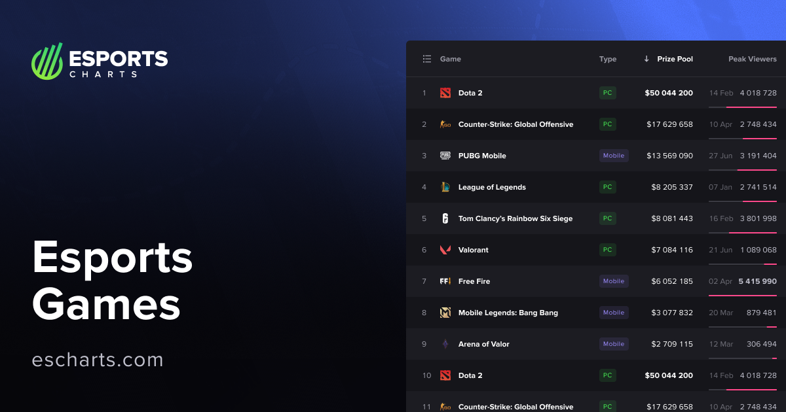

Топ-3 кіберспортивні гри 2025

Кіберспорт у 2025 році продовжує активно розвиватися та залучати мільйони гравців і глядачів по всьому світу. У цій статті розглянуто три найпопулярніші кіберспортивні дисципліни року.
Counter-Strike 2 залишається беззаперечним лідером кіберспорту. У 2025 році ця дисципліна стала найприбутковішою, а загальний призовий фонд турнірів перевищив 138 мільйонів гривень. Гра має стабільну професійну сцену та велику кількість міжнародних змагань.
League of Legends утримує позицію однієї з найпопулярніших ігор за кількістю глядачів. Фінал чемпіонату світу у 2025 році встановив рекорд, зібравши 6,7 мільйона глядачів одночасно. Це підтверджує високий інтерес до гри та її глобальний масштаб.
Mobile Legends: Bang Bang є лідером серед мобільних кіберспортивних ігор. Вона має найбільшу аудиторію, а піковий онлайн перевищив 4 мільйони активних гравців, що робить її найпопулярнішою мобільною дисципліною.
У 2025 році кіберспорт представлений як класичними ПК-іграми, так і мобільними хітами, що свідчить про його стрімкий і різноманітний розвиток.